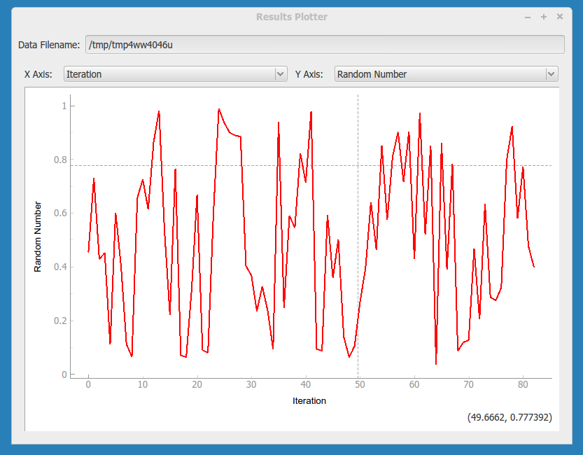
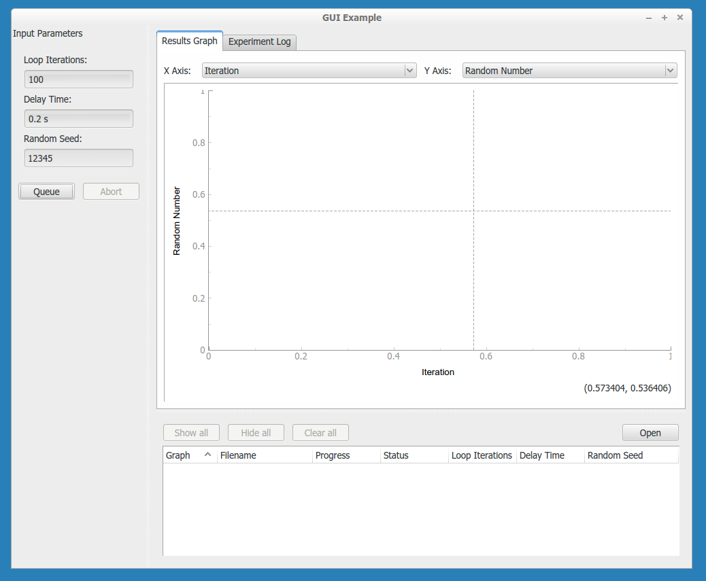
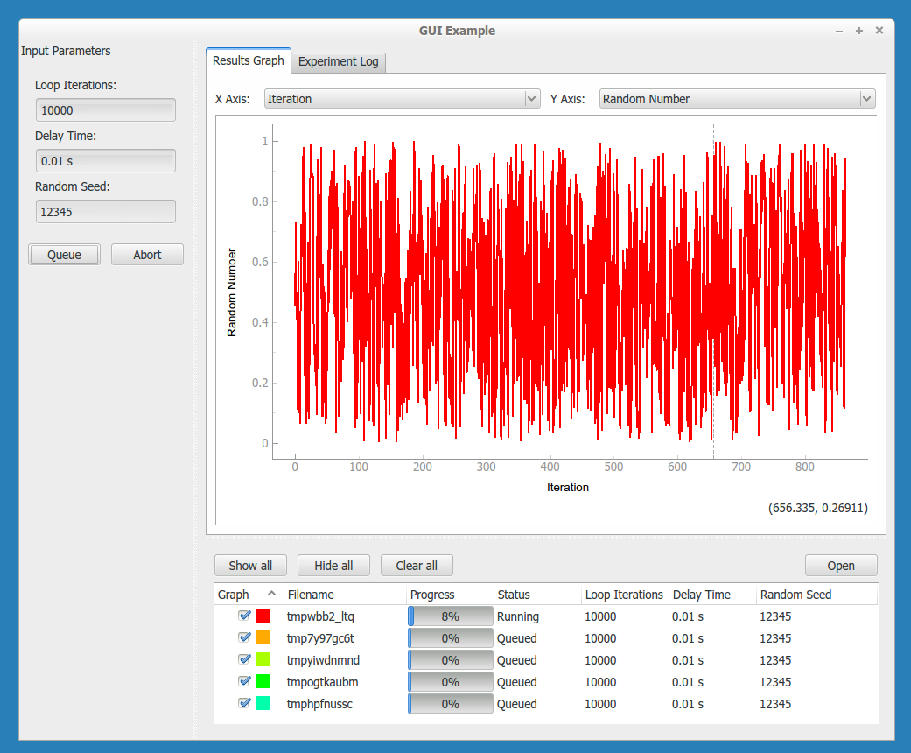
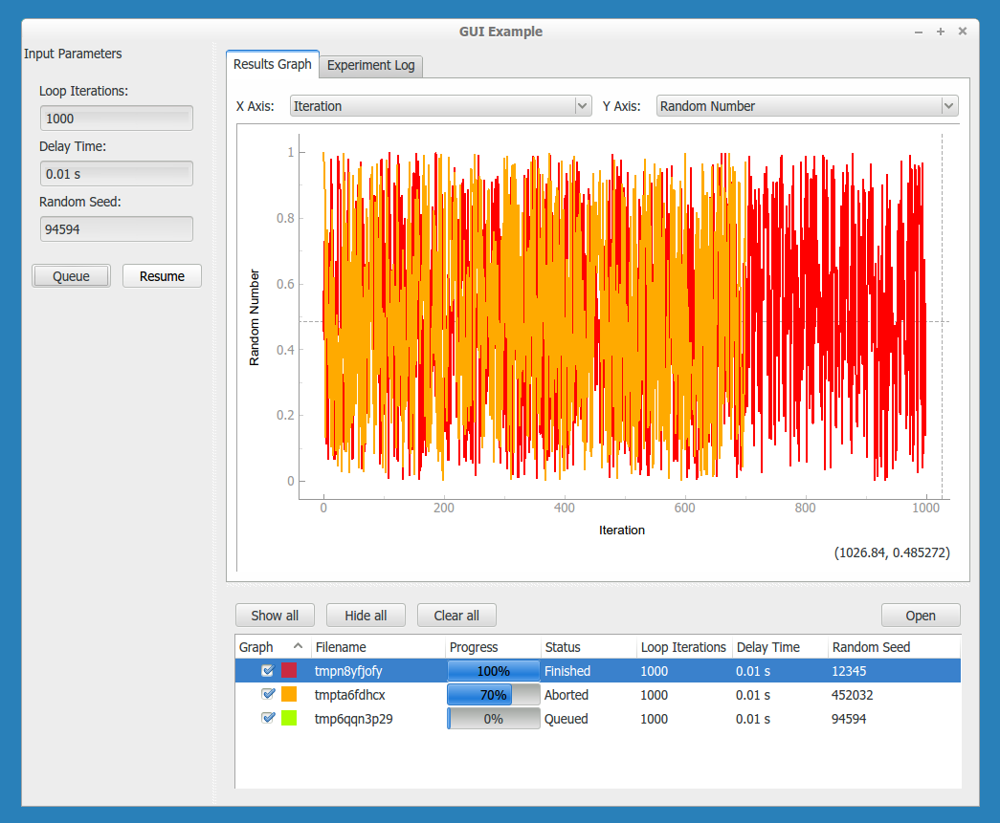
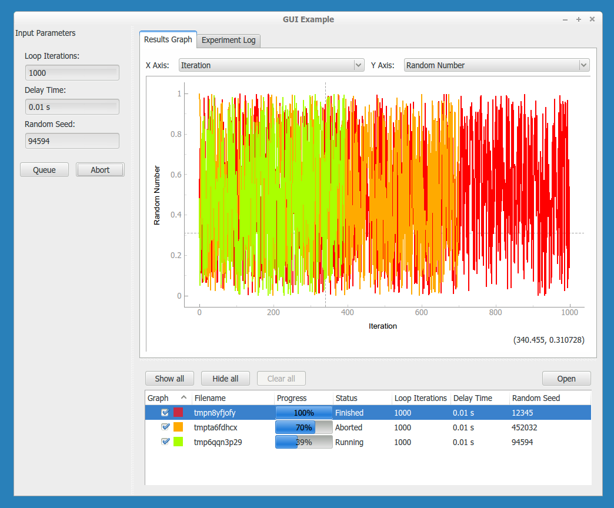
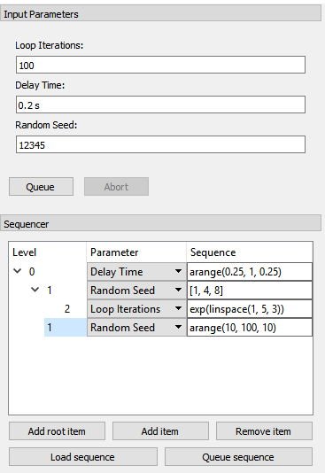
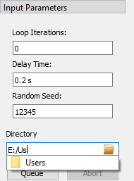

Using a graphical interface¶
In the previous tutorial we measured the IV characteristic of a sample to show how we can set up a simple experiment in PyMeasure. The real power of PyMeasure comes when we also use the graphical tools that are included to turn our simple example into a full-flegged user interface.
Using the Plotter¶
While it lacks the nice features of the ManagedWindow, the Plotter object is the simplest way of getting live-plotting. The Plotter takes a Results object and plots the data at a regular interval, grabbing the latest data each time from the file.
Let’s extend our SimpleProcedure with a RandomProcedure, which generates random numbers during our loop. This example does not include instruments to provide a simpler example.
import logging
log = logging.getLogger(__name__)
log.addHandler(logging.NullHandler())
import random
from time import sleep
from pymeasure.log import console_log
from pymeasure.display import Plotter
from pymeasure.experiment import Procedure, Results, Worker
from pymeasure.experiment import IntegerParameter, FloatParameter, Parameter
class RandomProcedure(Procedure):
iterations = IntegerParameter('Loop Iterations')
delay = FloatParameter('Delay Time', units='s', default=0.2)
seed = Parameter('Random Seed', default='12345')
DATA_COLUMNS = ['Iteration', 'Random Number']
def startup(self):
log.info("Setting the seed of the random number generator")
random.seed(self.seed)
def execute(self):
log.info("Starting the loop of %d iterations" % self.iterations)
for i in range(self.iterations):
data = {
'Iteration': i,
'Random Number': random.random()
}
self.emit('results', data)
log.debug("Emitting results: %s" % data)
sleep(self.delay)
if self.should_stop():
log.warning("Caught the stop flag in the procedure")
break
if __name__ == "__main__":
console_log(log)
log.info("Constructing a RandomProcedure")
procedure = RandomProcedure()
procedure.iterations = 100
data_filename = 'random.csv'
log.info("Constructing the Results with a data file: %s" % data_filename)
results = Results(procedure, data_filename)
log.info("Constructing the Plotter")
plotter = Plotter(results)
plotter.start()
log.info("Started the Plotter")
log.info("Constructing the Worker")
worker = Worker(results)
worker.start()
log.info("Started the Worker")
log.info("Joining with the worker in at most 1 hr")
worker.join(timeout=3600) # wait at most 1 hr (3600 sec)
log.info("Finished the measurement")
The important addition is the construction of the Plotter from the Results object.
plotter = Plotter(results)
plotter.start()
The Plotter is started in a different process so that it can be run on a separate CPU for higher performance. The Plotter launches a Qt graphical interface using pyqtgraph which allows the Results data to be viewed based on the columns in the data.

Using the ManagedWindow¶
The ManagedWindow is the most convenient tool for running measurements with your Procedure. This has the major advantage of accepting the input parameters graphically. From the parameters, a graphical form is automatically generated that allows the inputs to be typed in. With this feature, measurements can be started dynamically, instead of defined in a script.
Another major feature of the ManagedWindow is its support for running measurements in a sequential queue. This allows you to set up a number of measurements with different input parameters, and watch them unfold on the live-plot. This is especially useful for long running measurements. The ManagedWindow achieves this through the Manager object, which coordinates which Procedure the Worker should run and keeps track of its status as the Worker progresses.
Below we adapt our previous example to use a ManagedWindow.
import logging
log = logging.getLogger(__name__)
log.addHandler(logging.NullHandler())
import sys
import tempfile
import random
from time import sleep
from pymeasure.log import console_log
from pymeasure.display.Qt import QtWidgets
from pymeasure.display.windows import ManagedWindow
from pymeasure.experiment import Procedure, Results
from pymeasure.experiment import IntegerParameter, FloatParameter, Parameter
class RandomProcedure(Procedure):
iterations = IntegerParameter('Loop Iterations')
delay = FloatParameter('Delay Time', units='s', default=0.2)
seed = Parameter('Random Seed', default='12345')
DATA_COLUMNS = ['Iteration', 'Random Number']
def startup(self):
log.info("Setting the seed of the random number generator")
random.seed(self.seed)
def execute(self):
log.info("Starting the loop of %d iterations" % self.iterations)
for i in range(self.iterations):
data = {
'Iteration': i,
'Random Number': random.random()
}
self.emit('results', data)
log.debug("Emitting results: %s" % data)
sleep(self.delay)
if self.should_stop():
log.warning("Caught the stop flag in the procedure")
break
class MainWindow(ManagedWindow):
def __init__(self):
super(MainWindow, self).__init__(
procedure_class=RandomProcedure,
inputs=['iterations', 'delay', 'seed'],
displays=['iterations', 'delay', 'seed'],
x_axis='Iteration',
y_axis='Random Number'
)
self.setWindowTitle('GUI Example')
def queue(self):
filename = tempfile.mktemp()
procedure = self.make_procedure()
results = Results(procedure, filename)
experiment = self.new_experiment(results)
self.manager.queue(experiment)
if __name__ == "__main__":
app = QtWidgets.QApplication(sys.argv)
window = MainWindow()
window.show()
sys.exit(app.exec_())
This results in the following graphical display.

In the code, the MainWindow class is a sub-class of the ManagedWindow class. We override the constructor to provide information about the procedure class and its options. The inputs are a list of Parameters class-variable names, which the display will generate graphical fields for. When the list of inputs is long, a boolean key-word argument inputs_in_scrollarea is provided that adds a scrollbar to the input area. The displays is a list similar to the inputs list, which instead defines the parameters to display in the browser window. This browser keeps track of the experiments being run in the sequential queue.
The queue method establishes how the Procedure object is constructed. We use the self.make_procedure method to create a Procedure based on the graphical input fields. Here we are free to modify the procedure before putting it on the queue. In this context, the Manager uses an Experiment object to keep track of the Procedure, Results, and its associated graphical representations in the browser and live-graph. This is then given to the Manager to queue the experiment.

By default the Manager starts a measurement when its procedure is queued. The abort button can be pressed to stop an experiment. In the Procedure, the self.should_stop call will catch the abort event and halt the measurement. It is important to check this value, or the Procedure will not be responsive to the abort event.

If you abort a measurement, the resume button must be pressed to continue the next measurement. This allows you to adjust anything, which is presumably why the abort was needed.

Now that you have learned about the ManagedWindow, you have all of the basics to get up and running quickly with a measurement and produce an easy to use graphical interface with PyMeasure.
Customising the plot options¶
For both the PlotterWindow and ManagedWindow, plotting is provided by the pyqtgraph library. This library allows you to change various plot options, as you might expect: axis ranges (by default auto-ranging), logarithmic and semilogarithmic axes, downsampling, grid display, FFT display, etc. There are two main ways you can do this:
You can right click on the plot to manually change any available options. This is also a good way of getting an overview of what options are available in pyqtgraph. Option changes will, of course, not persist across a restart of your program.
You can programmatically set these options using pyqtgraph’s PlotItem API, so that the window will open with these display options already set, as further explained below.
For Plotter, you can make a sub-class that overrides the setup_plot() method. This method will be called when the Plotter constructs the window. As an example
class LogPlotter(Plotter):
def setup_plot(self, plot):
# use logarithmic x-axis (e.g. for frequency sweeps)
plot.setLogMode(x=True)
For ManagedWindow, Similarly to the Plotter, the setup_plot() method can be overridden by your sub-class in order to do the set-up
class MainWindow(ManagedWindow):
# ...
def setup_plot(self, plot):
# use logarithmic x-axis (e.g. for frequency sweeps)
plot.setLogMode(x=True)
# ...
It is also possible to access the plot attribute while outside of your sub-class, for example we could modify the previous section’s example
if __name__ == "__main__":
app = QtWidgets.QApplication(sys.argv)
window = MainWindow()
window.plot.setLogMode(x=True) # use logarithmic x-axis (e.g. for frequency sweeps)
window.show()
sys.exit(app.exec_())
See pyqtgraph’s API documentation on PlotItem for further details.
Using the sequencer¶
As an extension to the way of graphically inputting parameters and executing multiple measurements using the ManagedWindow, SequencerWidget is provided which allows users to queue a series of measurements with varying one, or more, of the parameters. This sequencer thereby provides a convenient way to scan through the parameter space of the measurement procedure.
To activate the sequencer, two additional keyword arguments are added to ManagedWindow, namely sequencer and sequencer_inputs. sequencer accepts a boolean stating whether or not the sequencer has to be included into the window and sequencer_inputs accepts either None or a list of the parameter names are to be scanned over. If no list of parameters is given, the parameters displayed in the manager queue are used.
In order to be able to use the sequencer, the ManagedWindow class is required to have a queue method which takes a keyword (or better keyword-only for safety reasons) argument procedure, where a procedure instance can be passed. The sequencer will use this method to queue the parameter scan.
In order to implement the sequencer into the previous example, only the MainWindow has to be modified slightly (where modified lines are marked):
class MainWindow(ManagedWindow):
def __init__(self):
super(MainWindow, self).__init__(
procedure_class=TestProcedure,
inputs=['iterations', 'delay', 'seed'],
displays=['iterations', 'delay', 'seed'],
x_axis='Iteration',
y_axis='Random Number',
sequencer=True, # Added line
sequencer_inputs=['iterations', 'delay', 'seed'], # Added line
sequence_file="gui_sequencer_example_sequence.txt", # Added line, optional
)
self.setWindowTitle('GUI Example')
def queue(self, *, procedure=None): # Modified line
filename = tempfile.mktemp()
if procedure is None: # Added line
procedure = self.make_procedure() # Indented
results = Results(procedure, filename)
experiment = self.new_experiment(results)
self.manager.queue(experiment)
This adds the sequencer underneath the the input panel.

The widget contains a tree-view where you can build the sequence.
It has three columns: level (indicated how deep an item is nested), parameter (a drop-down menu to select which parameter is being sequenced by that item), and sequence (the text-box where you can define the sequence).
While the two former columns are rather straightforward, filling in the later requires some explanation.
In order to maintain flexibility, the sequence is defined in a text-box, allowing the user to enter any list-generating single-line piece of code.
To assist in this, a number of functions is supported, either from the main python library (namely range, sorted, and list) or the numpy library.
The supported numpy functions (prepending numpy. or any abbreviation is not required) are: arange, linspace, arccos, arcsin, arctan, arctan2, ceil, cos, cosh, degrees, e, exp, fabs, floor, fmod, frexp, hypot, ldexp, log, log10, modf, pi, power, radians, sin, sinh, sqrt, tan, and tanh.
As an example, arange(0, 10, 1) generates a list increasing with steps of 1, while using exp(arange(0, 10, 1)) generates an exponentially increasing list.
This way complex sequences can be entered easily.
The sequences can be extended and shortened using the buttons Add root item, Add item, and Remove item.
The later two either add a item as a child of the currently selected item or remove the selected item, respectively.
To queue the entered sequence the button Queue sequence can be used.
If an error occurs in evaluating the sequence text-boxes, this is mentioned in the logger, and nothing is queued.
Finally, it is possible to write a simple text file to quickly load a pre-defined sequence with the Load sequence button, such that the user does not need to write the sequence again each time.
In the sequence file each line adds one item to the sequence tree, starting with a number of dashes (-) to indicate the level of the item (starting with 1 dash for top level), followed by the name of the parameter and the sequence string, both as a python string between parentheses.
An example of such a sequence file is given below, resulting in the sequence shown in the figure above.
- "Delay Time", "arange(0.25, 1, 0.25)"
-- "Random Seed", "[1, 4, 8]"
--- "Loop Iterations", "exp(linspace(1, 5, 3))"
-- "Random Seed", "arange(10, 100, 10)"
This file can also be automatically loaded at the start of the program by adding the key-word argument sequence_file="filename.txt" to the super(MainWindow, self).__init__ call, as was done in the example.
Using the directory input¶
It is possible to add a directory input in order to choose where the experiment’s result will be saved. This option is activated by passing a boolean key-word argument directory_input during the ManagedWindow init. The value of the directory can be retrieved using the property directory.
Only the MainWindow needs to be modified in order to use this option (modified lines are marked).
class MainWindow(ManagedWindow):
def __init__(self):
super(MainWindow, self).__init__(
procedure_class=TestProcedure,
inputs=['iterations', 'delay', 'seed'],
displays=['iterations', 'delay', 'seed'],
x_axis='Iteration',
y_axis='Random Number',
directory_input=True, # Added line
)
self.setWindowTitle('GUI Example')
def queue(self):
directory = self.directory
filename = unique_filename(directory) # Modified line
results = Results(procedure, filename)
experiment = self.new_experiment(results)
self.manager.queue(experiment)
This adds the input line above the Queue and Abort buttons.

A completer is implemented allowing to quickly select an existing folder, and a button on the right side of the input widget opens a browse dialog.